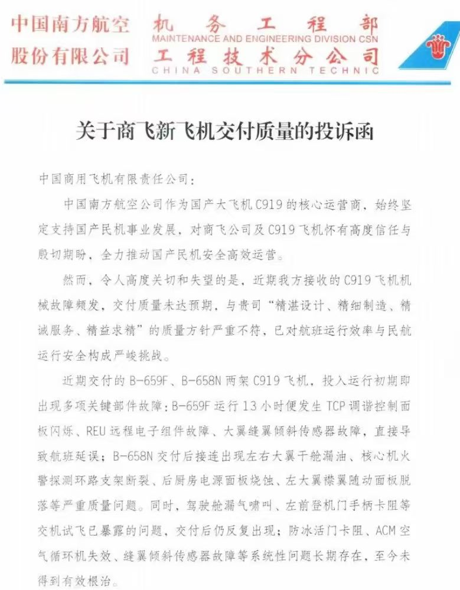
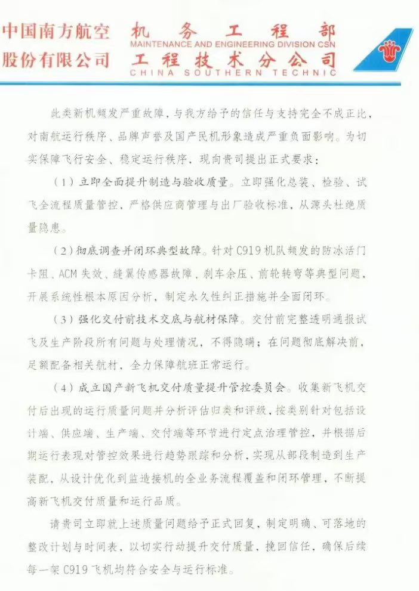

Wesley
@Wesley10032
纯属带节奏。C919现在商用才多久，任何的商用飞机，在投入使用前期都会暴露出很多问题。给中国商飞致函，不仅是为乘客安全着想，更是为国产飞机负责。毕竟如果不这么做，到时候C919真出问题了，反贼和公知们就找到一个很好的突破点了。


亚军&王歪嘴
@yajunwwz
中国南方航空竟然敢投诉中国商飞C919飞机的数十项技术和质量问题，这跟跑到中南海指着鼻子历数圣上烂尾有啥区别？
马须伦书记这是要谋反？ https://t.co/YVHiaIklHf